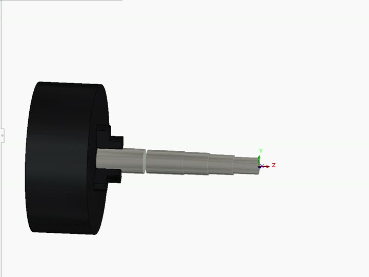

Training + personal project
Machined Parts and CAM Programming
- Found
- Making parts by hand showed me how much of the result is decided by the setup plan.
- Outcome
- 9 parts modeled, 5 programmed in SolidWorks CAM; programs run on Haas CNC
programs · drawings · simulationsRead the story →